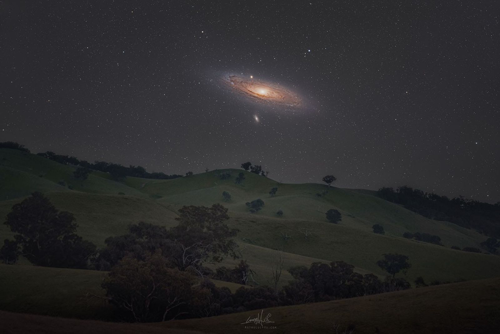

Mohakash · Design lab · Nav / horizon
The horizon rail —
a footer, not a tab bar.
Feed and Archive become a contents pair set in Newsreader at the left margin. A hairline gutter, then one command in the right margin: a small rocket over a tracked RANDOM readout. The bar is one thin rule and negative space — no floating circle, no centre slot, nothing protruding over the photograph.
The launch sits where the thumb rests. The two sections sit where the eye starts. Tiny caps, a 1 dp gutter and a 20 dp margin do the instrumentation; the accent is used once, for the action.
Preview state
1 CSS px = 1 dp · mdpi reference
01Feed · live plate360 × 800 dp

9:41
26 October 2026·Roberto Palaia
M42: The Great Nebula in Orion
Wallpaper
Full entry
Save
Save
Share
SelectedRestingAction / rule
The pair reads as a folio. Feed and Archive sit together at the 20 dp margin; the eye travels left to right from section to command.
The launch is the only accent. A 21 dp rocket over 10 sp / 600 caps, right-aligned in a 64 × 56 dp target. It is a command, not a tab.
No protrusion. The strip stays 72 dp inside the Scaffold; nothing is painted over the caption or the plate.
02Archive · library411 × 800 dp
9:41
Archive
Saved
M42: The Great Nebula in Orion
26 Oct 2026Image

Andromeda in Southern Spring
23 Oct 2026Image
The First Green Star, WD J1330+6435
22 Oct 2026Image
Rosetta's Selfie
24 Oct 2026Image
Dark Matter in a Simulated Universe
25 Oct 2026Image
Auroral Corona
01 Jan 2026Image
Left pair fixed to the 20 dp marginGutter at 24 dp before the launch
Same footer on both screens. The active underline simply moves from Feed to Archive; the command does not move at all.
The gutter is a margin rule, not a divider between tabs. It separates the contents from the one action — a console boundary.
Wide screens breathe. At 411 the contents pair stays anchored; the extra width becomes margin before the gutter.
Anatomy of the strip
360 dp reference · 72 dp + system insetDimensions
| Strip height (content) | 72 dp + system inset |
| Horizontal margin | 20 dp |
| Contents gap (Feed → Archive) | 41 dp |
| Archive → gutter | auto · min 24 dp |
| Gutter → launch target | 24 dp |
| Anchor target height | 48 dp · 73 / 101 dp wide |
| Launch target | 64 × 56 dp |
| Serif word | Newsreader 19 sp / 19 sp · 500 |
| Command caps | Inter 10 sp · 600 · .18 em |
| Icons | 20 dp anchor · 21 dp launch |
| Active rule | 1 dp accent, 5 dp under baseline |
| Gutter | 1 × 40 dp, Border |
| System inset | 24 dp gesture / 48 dp 3-button |
Tokens in use
SurfaceRaised#11141B
Border#232838
Text#E8EAF0
TextMuted#A3ABBD
Accent#8FB0FF
Text 15.3 : 1 · Muted 8.0 : 1 · Accent 8.6 : 1 on SurfaceRaised. All three clear WCAG AAA for normal text; the 1 dp rules are decorative, never the only cue.
Why not centre
A centre slot makes three equal tabs and forces every item into a symmetric column. The asymmetry here is structural: contents left, command right — a composition, not a nudged balance.
Why the launch is quiet
No filled circle, no ring, no elevation. The rocket is a mark plus a word; its weight comes from the single accent and the 24 dp gutter, not from size. Still 64 × 56 dp to press.
Why serif here
These are section names, not controls: Feed and Archive are set in Newsreader 19, like a contents page. The one action speaks Inter caps. The type split does the hierarchy.
Two other ways we looked at the horizon
considered · not recommendedThe horizon command
The launch sits on the horizon rule, right of centre; the two sections sit below it at the edges. The most literal "instrument" reading, but the command floats free of the page and its label can collide with Archive at large type.
The draw key
Random is welded to Feed inside one bracketed key — the action acts on the page it sits next to. Strong semantics, but it shrinks the Feed target, makes Archive the only unpaired item, and reads as a segmented control.